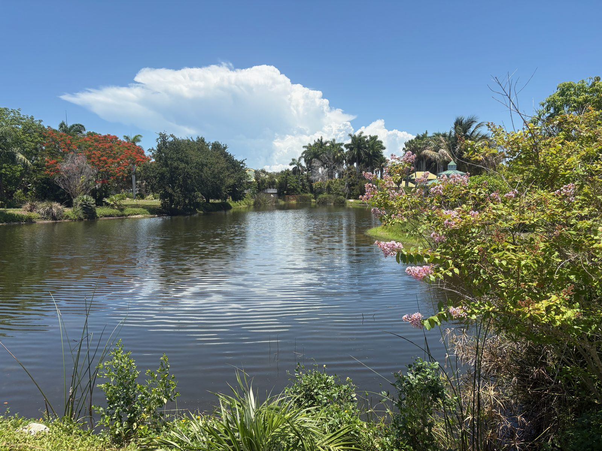

Ten acres on the shore of Palma Sola Bay — open every day, free forever, run by the community that loves it.
Come for a walk and stay for a class. Spot a gallinule on the pond or an anhinga drying its wings in the sun. Volunteer on a Saturday, catch a live music night, or browse the art gallery. The plants have names and stories. The birds have been coming for decades.
You don't have to be a botanist or a birder. You just have to show up.
No entrance fee. No government funding. Three donation boxes on-site. Every dollar you leave goes straight back into the park.
Classes, live music, art openings, guided walks, workshops — the calendar keeps growing. See what's coming up →
Use your phone to record what you find — plant, bird, insect, lizard. The best shots get featured right here on our site, always with full credit to you. Here's how →
What's worth a look this week — what's blooming, fruiting, or just passing through. Kept current by the people who walk this park and add to our wildlife collection at the same time. See the collection here.
Every photo below was taken at Palma Sola Botanical Park by a community member and submitted to our iNaturalist project. Plants and animals together — because that's how a living park works.
We need people making detailed observations of the plants on iNaturalist — and helping identify all the species you see. Come join us. Get started →
Every number above is a person who came out here and did something.
This is a place to walk slowly, notice things, and come back again. To bring your dog, your kids, your camera, or just yourself. To volunteer on a Saturday morning and stay for lunch. To hear live music under the palms, celebrate a birthday in the gazebo, or sit quietly by the pond and watch what happens.
The people who tend this place know it like a neighborhood — because it is one.
And right now, something is shifting. We're doubling down on making this park truly ours — self-guided tours, more events for families and kids, ways for you to contribute your own photos and knowledge to the park's growing record, and rewards for the people who help us learn this place together. The calendar is filling up. New things are coming. The best reason to visit today is that it'll be even better next month.
Come in the morning when the birds are active. Come in summer when the pond overflows with life. Come whenever you feel like it — the gate is always open.

8am – Dusk, every day of the year
Closed for private events — check the calendar before a weekend visit.
FREE
No federal, state, or local government subsidies. Donations keep the lights on.
9800 17th Ave NW
Bradenton, FL 34209
Open in Maps →
The calendar here keeps growing — guided plant walks, Zumba under the palms, native gardening workshops, art openings in the Galleria, and community gatherings that have nothing to do with plants except the backdrop. Classes are added regularly. Events fill up. The nursery opens every Tuesday and Saturday morning October through May with plants propagated right here on-site.
And if you want to do more than attend — pull a weed, water something, give a tour, or just show up on a Saturday and ask what needs doing — this place runs on people exactly like you.